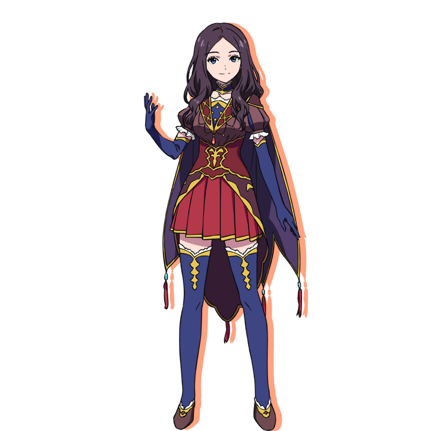

Bienvenue sur le fansite francophone dédié à Leonardo da Vinci dans la série Fate/Grand Order !
Région : Europe
Source : Faits historiques
Classe : Caster
Alignements : Chaotic Good
Leonardo Da Vinci est l'un des Servants invoqués par Chaldea sous les traits de la plus célèbre de ses œuvres : la Joconde, Mona Lisa. Elle sert de conseillère spéciale de la division technique de l'organisation, œuvrant dans le but de confirmer l'existence du Master et de ses Servants lors de leurs expéditions dans les différentes Singularités.
Génie autoproclamée, Da Vinci possède un très gros ego qui lui fait adorer être complimentée. Elle a d'ailleurs un penchant prononcé pour les entrées en grandes pompes. Contrairement à son collège le Dr. Roman, qui est également son souffre-douleur, Da Vinci est dotée d'un tempérament enthousiaste et optimiste.
Bien qu'elle n'ait que peu l'occasion de prendre part par elle-même aux voyages dans les différentes Singularités, Da Vinci aide Ritsuka et Mash de bien nombreuses manières. C'est notamment elle qui leur donne des informations sur les époques auxquelles ils voyagent et sur les Esprits Héroïques qu'ils rencontrent en chemin. En raison de sa renommée de très grand inventeur, elle est également capable de confectionner des objets et vêtements spéciaux pouvant soutenir le dernier Master de l'Humanité, mais sait aussi concevoir divers bolides (pas toujours très solides ceci dit).